МИНИСТЕРСТВО АВТОМОБИЛЬНЫХ ДОРОГ РСФСР
Утверждены
Минавтодором РСФСР
10 июля 1984 г.
УКАЗАНИЯ
ПО АРХИТЕКТУРНО-ЛАНДШАФТНОМУ
ПРОЕКТИРОВАНИЮ АВТОМОБИЛЬНЫХ ДОРОГ
ВСН 18-84
Минавтодор
МОСКВА «ТРАНСПОРТ» 1985
Содержатся рекомендации, направленные на повышение транспортно-эксплуатационных качеств дорог, облегчение труда водителей, охрану окружающей среды, обеспечение безопасности движения, согласование с ландшафтом. Приведены количественные показатели для оценки зрительной плавности дорог и методы их расчета на ЭВМ. Даны рекомендации по озеленению и оборудованию дорог площадками отдыха.
Указания разработаны под руководством проф. В. Ф. Бабкова проф. Е. М. Лобановым, доц. Н. П. Орнатским, инж. Ю. М. Белой, инж. М. Н. Финкельштейном и арх. Э. Л. Тетеровским.
|
Министерство автомобильных дорог РСФСР |
Ведомственные строительные нормы |
ВСН 18-84 Взамен ВСН 18-74 Минавтодор РСФСР |
|
Указания по архитектурно-ландшафтному проектированию автомобильных дорог |
1.1. Указания распространяются на разработку проектов строительства, реконструкции и капитального ремонта автомобильных дорог общего пользования и подлежат учету при эксплуатации дорог. Требования Указаний обязательны для проектирования автомобильных дорог общегосударственного и республиканского значения I-III категорий.
1.2. Автомобильную дорогу сооружают на долгие годы и, хотя по мере роста интенсивности движения ее реконструируют, основные черты, в первую очередь ее трасса, изменяются мало. Дорога, являясь местом труда многих людей, одним из основных элементов современного ландшафта, должна удовлетворять не только техническим, но и эстетическим требованиям.
1.3. Архитектурно-ландшафтное проектирование дорог представляет собой комплекс требований и рекомендаций, направленных на сохранение и улучшение существующего ландшафта, исторических и культурных памятников, повышение безопасности движения, снижение утомляемости водителей и пассажиров, сохранение ценных сельскохозяйственных угодий, сведение к минимуму вредного воздействия дороги на окружающую среду.
Указанных целей достигают комплексным решением следующих задач:
вписыванием дороги в ландшафт с целью улучшить удобство движения, раскрыть перед едущими местного ландшафта, предотвратить нарушение дорогой его закономерностей;
дополнением и улучшением природного ландшафта путем озеленения, планировочных и осушительных работ, оборудования и оформления дороги, создания мест отдыха водителей и пассажиров;
пространственным трассированием дороги, т.е. соблюдением требований к сочетаниям элементов трассы в пространстве, обеспечивающих ее плавность и ясность направления;
зрительным ориентированием, т.е. созданием системы таких зрительных ориентиров, которые позволяют водителям предвидеть на большом расстоянии, в том числе и за пределами видимости, изменение направления дороги и дорожных условий, а также выбрать безопасный режим движения.
Первые две задачи направлены на согласование дороги с окружающим пространством и обеспечение внешней гармоничности дороги. Решение последних двух задач обеспечивают зрительную ясность и плавность дороги (внутреннюю гармоничность дороги).
1.4. При ландшафтном проектировании экономическая оценка проектных решений выполняется по методике, изложенной в Указаниях по определению экономической эффективности капитальных вложений в строительство и реконструкцию автомобильных дорог (ВСН 21-83).
Выполнение требований настоящих Указаний позволяет, как правило, снижать стоимость строительства благодаря уменьшению длины трассы за счет применения кривых в плане большого радиуса и переходных кривых больших параметров; сокращению затрат на обеспечение устойчивости земляного полотна и искусственных сооружений при обходе участков с неблагоприятными грунтово-гидрологическими условиями; уменьшению объема земляных работ.
|
Внесены Дорожно-транспортной научно-исследовательской лабораторией при МАД и Гипродорнин |
Утверждены Министерством автомобильных дорог РСФСР |
Срок введения |
Кроме этого, уменьшается автотранспортная составляющая приведенных затрат согласно ВСН 25-76 за счет роста скорости на участках с большими радиусами кривых в плане и продольном профиле и с увеличенным расстоянием видимости; уменьшения числа автомобилей для перевозки грузов с более высокими скоростями.
Уменьшается и составляющая приведенных, затрат от дорожно-транспортных происшествий согласно ВСН 3-81 за счет увеличения радиуса кривых в плане и расстоянии видимости; снижения продольных уклонов и тяжести дорожно-транспортных происшествий при обеспечении больших расстояний видимости.
2.1. Основной принцип архитектурно-ландшафтного проектирования - создать из всех элементов дорожного ландшафта - проезжей части, земляного полотна, линейных зданий, насаждений, оформления и оборудования дороги единый архитектурный ансамбль и согласовать его с ландшафтом.
2.2. Согласование дороги с ландшафтом основывается на внутренних закономерностях сочетания элементов ландшафта и их соотношения с геометрическими размерами плане и продольного профиля дороги - требование масштабности.
Основой для установления закономерностей ландшафта служит геоморфологический анализ, выявляющий структуру рельефа и главные его элементы. К основным характеристикам рельефа относятся: перепады высот, уклоны скатов, кривизна выпуклых и вогнутых форм рельефа, его расчлененность, определяемая частотой отдельных форм рельефа, наибольшими и наименьшими расстояниями между ними. Эти характеристики могут быть определены по карте местности или данным аэрофотосъемки.
2.3. Участок местности, характеризующийся единством ландшафтных признаков, образует архитектурно-ландшафтный бассейн.
Границами архитектурного бассейна могут быть: переломы рельефа, ограничивающие видимость; границы разных ландшафтов, совпадающие с границами населенных пунктов, большими мостовыми переходами, лесными опушками. Архитектурный бассейн должен просматриваться до его границ. В пределах каждого архитектурного бассейна рекомендуется продольный профиль проектировать в виде плавной вогнутой линии без мелких выпуклых переломов.
2.4. Каждый архитектурный бассейн должен иметь главные оси или центры архитектурных композиций.
В качестве главной оси могут быть линии основных форм рельефа, речные долины, дороги. Центрами архитектурных композиций являются объекты, выделяющиеся на фоне остальных элементов ландшафта и придающие бассейну своеобразие и индивидуальность. Такие объекты называют доминантами. Ими могут быть населенные пункты, отдельные большие здания, рощи, холмы, водные поверхности, а также объекты и здания придорожных комплексов, сооружения на горных дорогах, мостовые переходы и группы декоративного озеленения.
В каждом бассейне должно быть не более одной доминанты, в некоторых случаях, например в однородной однообразной открытой местности, доминанта может зрительно разграничивать архитектурные бассейны.
2.5. Архитектурный бассейн должен преодолеваться транспортным потоком не более, чем за 10 мин. Архитектурные бассейны на одной дороге должны отличаться разнообразием (при соблюдении единства стиля дороги на достаточно больших расстояниях). За счет этого снижается монотонность движения.
2.6. Дорога должна следовать характерным линиям ландшафта, не считаясь с малыми и мельчайшими складками рельефа. Чем выше категория дороги, тем выше требования к согласованию дороги и ландшафта.
2.7. Трасса в пространстве должна представлять собой плавную линию, в которой соразмерно сочетаются прямые и кривые, горизонтальные участки и продольные уклоны. Должны быть исключены сочетания элементов, которые могут вызвать ошибочные действия водителей и привести к зрительным иллюзиям.
2.8. Ритм трассы, т.е. закономерность чередования ее элементов - длин, углов, радиусов кривых в плане и продольном профиле, уклонов - должен соответствовать ритму основных форм рельефа (холмов, долин, рек, водоразделов). Размер элементов трассы и местоположение углов поворотов должны быть намечены до начала полевых изыскательских работ.
2.9. Общий архитектурный стиль дороги, характер трассирования, методы вписывания в ландшафт должны быть сформулированы до начала полевых изысканий. По карте, аэрофотосъемкам или материалам рекогносцировки должны быть намечены границы и содержание архитектурных бассейнов (стиль трассы и оформление) с тем, чтобы приурочить к этим границам основные повороты трассы в плане и наиболее заметные выпуклости продольного профиля.
2.10. В ходе изысканий уточняют стиль каждого архитектурного бассейна и всех элементов трассы.
Для каждого архитектурного бассейна предусматривают общий фон (его можно создать, например, средствами озеленения) и доминанты. Выявляют, каких доминант или разграничений не хватает, и недостающие создают средствами дорожной архитектуры. Выбирают схему декоративного озеленения, на основании которой в натуре подбирают вдоль будущей дороги деревья и кустарники, подлежащие сохранению в ходе строительства (реконструкции, капитального ремонта) дороги.
2.11. На стадии проекта во время работы с планом и продольным профилем трассы проверяют соответствие запроектированных сочетаний элементов трассы критериям плавкости, а также трассы с ландшафтом (см. главу 5). Одновременно на основе архитектурного линейного графика и материалов полевых изысканий принимают решения по озеленению дороги, размещению и оборудованию площадок отдыха.
2.12. На стадии составления рабочей документации уточняют привязку типовых чертежей озеленения, мест отдыха, стоянок, автопавильонов и автобусных остановок, выявляют места получения посадочного материала, согласовывают условия его приобретения, исправляют проектные решения в пределах полосы отвода, не соответствующие критериям плавности.
При выносе проекта в натуру выполняют разбивочные работы, разметку посадок декоративного озеленения и проверяют проектные, решения участков дороги, подвергшихся существенному исправлению в плане или в продольном профиле.
3.1.1. Критерии плавности дороги определяются прежде всего зрительным восприятием человеком пространственных соотношений и характеристик объектов. В качестве основной характеристики зрительной плавности рассматривают изменение кривизны линий, образующих изображение дороги, и скорость изменения этой кривизны.
3.1.2. Зрительная плавность оценивается математическими характеристиками линий, образующих изображение дороги в картинной плоскости. В качестве ведущей линии принимается внутренняя кромка проезжей части.
3.1.3. Математической характеристикой ведущей линии является радиус кривизны Rα в экстремальной точке (точке с наибольшей кривизной). Этот показатель выражается в угловых минутах (видимый угловой размер элементов изображения дороги)
Rα = Rк.пл/Sк.пл . 104/2,91, (1)
где Rк.пл - радиус кривизны ведущей линии в картинной плоскости, м;
Sк.пл - расстояние от наблюдателя до картинной плоскости, м;
104/2,91 - переходный коэффициент от радиан к угловым минутам.
3.1.5. Критерий зрительной плавности связан с математическими характеристиками видимого изображения дороги. Поэтому при проектировании оценить зрительную плавность дороги можно только расчетом. По перспективным изображениям надежно выполнить эту оценку нельзя, поэтому для оценки зрительной плавности нет необходимости вычерчивать перспективные изображения дороги.
Перспективные, изображения необходимы при оценке зрительной ясности дороги, ее внешней гармоничности и при решении вопросов оформления дороги, размещения средств зрительного ориентирования водителя.
3.2.1. При оценке зрительной плавности закругления в плане используют критерий плавности дороги, который определяют как соотношение кривизны ведущей линии перспективы и видимой ширины проезжей части в экстремальной точке (рис. 1). Это соотношение оценивают по графику (см. рис. 2).
Кривая в плане считается плавной, если в экстремальной точке ведущей линии соотношение Rα и Вα находятся в зоне 1 (рис. 2). Чем ниже по вертикали от границы зоны 1 находится точка, соответствующая Rα и Вα, тем более плавной будет восприниматься кривая в плане.
Условие плавности: Вα <
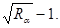
Рис. 1. Количественные характеристики зрительной плавности дороги:
а - формирование изображения в картинной плоскости; б - видимое изображение дороги
Рис. 2. Соотношение видимой ширины проезжей части Вα и радиуса кривизны ведущей линии Rα в экстремальной точке, определяющее зрительную плавность дороги
Все изображения дороги делятся на два класса - плавные и неплавные. Зрительная плавность дороги тем выше, чем ниже на рис. 2 лежит точка, соответствующая Вα и Rα для оцениваемого закругления.
3.2.2. Зрительную плавность дороги следует оценивать расчетами на ЭВМ; используя специальные программы. При их отсутствии такие расчеты могут быть выполнены и вручную. Для этого последовательно определяют расстояние до экстремальной точки на кривой, высоту глаз водителя над поверхностью кривой, видимый радиус, кривизны ведущей линии Rα, видимую ширину проезжей части Вα.
3.2.3. Расстояние от наблюдателя до экстремальной точки зависит от радиуса кривой в плане (или параметра переходной кривой) и положения наблюдателя на проезжей части и не зависит от продольного профиля. Это расстояние можно рассчитать по формулам 2 и 3 или определить по графику (рис. 3).
Для закруглений без переходных кривых
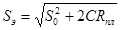
Для закруглений с переходными кривыми и для клотоидной трассы
Sэ = 0,12А + 75 при С = 1,5;
Sэ = 0,19А + 90 при С = 5,0 ÷ 6,0.
где S0 - расстояние от наблюдателя до начала закругления, м (для оценки кривой в плане принимается равным 50 м); Rпл - радиус кривой в плане, м; С - расстояние от наблюдателя до ведущей линий. Для двухполосных дорог и поворота направо С =1,5 м, для поворота налево С=5,0 м (при ширине проезжей части 7,5 м С равно соответственно 1,5 и 6 м); А - параметр клотоиды, м.
3.2.4. Высота глаз наблюдателя над поверхностью кривой (Н) зависит от расчетной высоты глаз водителя над проезжей частью (h) и продольного профиля на участке, где расположена кривая в плане. На выпуклом продольном профиле высота глаз над поверхностью закругления уменьшается и за счет этого увеличивается видимая кривизна ведущей линии, при вогнутом продольном профиле высота глаз над поверхностью закругления увеличивается, а видимая кривизна ведущей линии уменьшается. Величину Н определяют расчетом. Расчетную формулу выбирают в соответствии со схемой сочетания кривой в плане и кривой в продольном профиле на рис. 5 или 6. Величина Н не зависит от формы кривой в плане.
Рис. 3. Зависимость расстояния до экстремальной точки на кривой в плане от радиуса круговой кривой (при отсутствии переходной кривой)
Рис. 4. Зависимость расстояния до экстремальной точки на закруглении в плане с переходными кривыми от параметра клотоиды
Рис. 5. Расчетные схемы для определения Н при расположении экстремальной точки в пределах вогнутой вертикальной кривой:
a - взаимное расположение кривой в плане и вертикальной кривой; б - расчетная схема в продольном профиле и расчетная формула;
h - расчетная высота глаз водителя над проезжен частью, м; Sэ - расстояние от наблюдателя до экстремальной точки, м (см. п. 3.2.3); S8 - расстояние от начала вертикальной кривой до экстремальной точки (для случая, когда начало вертикальной кривой лежит между наблюдателем и экстремальной точкой); Sк - длина части вертикальной кривой на участке Sэ, Rвып - радиус вертикальной выпуклой кривой, м; Rвогн - радиус вертикальной вогнутой кривой, м
Рис. 6. Расчетные схемы для определения Н при расположении экстремальной точки в пределах выпуклой вертикальной кривой:
а - взаимное расположение кривой в плане и вертикальной кривой; б - расчетная схема в продольном профиле и расчетная формула
Рис. 7. Видимая ширина проезжей части Вα в зависимости от радиуса круговой кривой (закругление без переходных кривых)
Рис. 8. Видимая ширина проезжей масти Вα в зависимости от параметра клотоиды (закругление с переходными кривыми)
Если кривая в плане расположена на прямой в продольном профиле, независимо от уклона этом прямой Н=h.
3.2.5. Видимую ширину проезжен части в экстремальной точке определяют расчетом по формуле (4) или графиком (рис. 7 и 8).
Вα = Вп.ч/Sэ . 0,017453, (4)
где Вα - видимая ширина проезжей части, град; Вп.ч - ширина проезжен части дороги в экстремальной точке, м; Sэ - расстояние от наблюдателя до экстремальной точки, м.
3.2.6. Радиус кривизны ведущей линии перспективы (Rα) определяют расчетом на ЭВМ или по графикам (рис. 9 и 10). Для закруглений только с круговой кривой без переходных кривых
Rα = Н3Rпл . 101/Sэ3 . 2,91, (5)
где Н - высота глаз наблюдателя над поверхностью кривой в плане, м (определяют по п. 3.2.4); Rпл - радиус кривой в плане, м.
Для закругления с переходной кривой
Rα = Н2А2 . 101/Sэ3(Sэ - 50) . 2,91. (6)
Рис. 9. Видимая кривизна ведущей линии в экстремальной точке Rα на закруглении без переходной кривой:
Н - высота глаз водителя над поверхностью кривой в экстремальной точке
Рис. 10. Видимая кривизна ведущей линии в экстремальной точке Rα на закруглении с переходной кривой и на клотоидной трассе:
Н - высота глаз водителя над поверхностью кривой в экстремальной точке
3.2.7. Если закругление дороги не удовлетворяет критерию плавности, рекомендуется увеличить радиус кривой в плане, ввести переходную кривую на закруглении без переходной кривой, или увеличить параметр переходной кривой. Нельзя уменьшить радиусы вогнутых вертикальных кривых (для увеличения высоты глаз наблюдателя (Н) над поверхностью кривой), так кик это приводит к снижению безопасности движения.
На вогнутых участках продольного профиля зрительную плавность следует обеспечивать только за счет изменения параметров плана трассы, на выпуклых участках рекомендуется улучшать ее одновременным увеличением параметров кривых в плане и радиусов вертикальных кривых.
3.3.1. Волнистость продольного профиля, возникающая при неблагоприятных сочетаниях вогнутых и выпуклых вертикальных кривых, характеризуется отношением видимых размеров стрелки прогиба ведущей линии к расстоянию между вершинами прогиба. Математической характеристикой зрительной плавности прогиба является угол при вершине прогиба ψ, образованный касательными в точках перегиба линии (рис. 11, 12, 13)
ψ = 4f/l, (7)
где f - видимая стрелка прогиба; l - видимая длина прогиба.
3.3.2. Видимые размеры f и l и, следовательно, зрительная плавность волнистого продольного профиля зависит от высоты глаз водителя Н над участком прогиба, расстояния от наблюдателя до стрелки прогиба и кривизны трассы в плане.
Для участка дороги прямого в плане или на кривой в плане с углом поворота до 8º
ψ = 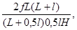
где f - стрелка прогиба в продольном профиле, м (см. рис. 12); L - расстояние от водителя до начала прогиба, м (для дорог I категории 1500 м, для других категорий 1000 м); l - длина прогиба, м (см. рис. 13); Н - высота глаз водителя над хордой прогиба, м.
Для трассы, прямолинейной в плане,
H = 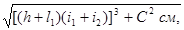
Рис. 11. Определение стрелки прогиба в продольном профиле на прямой в плане или при угле поворота трассы не более 8°:
а, б - сочетания одной вогнутой и двух выпуклых вертикальных кривых; в - сочетание вогнутой вертикальной кривой с выпуклой кривой и прямой
Рис. 12. Расчетная схема к определению ψ по формуле (10) при угле поворота трассы более 8°:
ω - угол поворота трассы
Рис. 13. Схема к расчету величины видимого угла при вершине прогиба в продольном профиле:
Н - высота глаз водителя над стрелкой прогиба: f - стрелка прогиба, t1 - расстояние до вершины прогиба
где h - высота глаз водителя над проезжен частью дороги, м (h = 1,2 м), t1 - расстояние от водителя до вершины перелома в продольном профиле, м; i1 и i2 - продольные уклоны, в долях единицы; Ссм - смещение водителя относительно ведущей линии, м (Ссм = 1,5 м).
Если между водителем и прогибом переломов в продольном профиле нет, H = 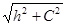
3.3.3. Если в плане трассы имеется поворот на угол более 8° или трасса является клотоидной, видимую длину прогиба определяют согласно рис. 13, a ψ по формуле
ψ = 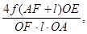
где f - стрелка прогиба, определяемая по продольному профилю, м; t - длина прогиба, м, определяемая по продольному профилю как расстояние между точками касания прямых к верхним точкам прогиба (по рис. 12).
3.3.4. Для криволинейной трассы величину угла рекомендуется находить в такой последовательности: определить хорду ЕG по рис. 12, соединяющую в плане крайние точки прогиба E и G; найти угол γ между хордой и лучом, направленным из точки G в начало прогиба Е; если этот угол меньше 3, считают, что прогиб лежит на прямой в плане ψ рассчитывают по формуле (8), если угол γ больше 3°, находят OA =tgγL; найти стрелку прогиба f согласно рис. 12 и угол ψ по формуле (10).
Если окажется, что ψ > 0,045, рекомендуется увеличивать длину ЕС за счет увеличения радиуса вертикальных кривых и уменьшения f.
Ориентировочно можно принять, что для обеспечения зрительной плавности дороги длину прогиба следует увеличить или стрелку прогиба уменьшить в К раз, где
К = ψ /0,015.
3.3.5. Условие зрительной плавности дороги на участке с прогибом в продольном профиле:
ψ < 0,015.
Если это условие не выполняется, рекомендуется увеличить радиусы вертикальных кривых, образующих прогиб, или угол поворота трассы в плане.
3.4.1. Прямая вставка в продольном профиле между двумя вертикальными кривыми нарушает зрительную плавность, если эта прямая воспринимается как самостоятельный элемент трассы. Это происходит, если видимая длина примой составляет более 0,1 от видимого наименьшего радиуса кривизны ведущей линии. В качестве ведущей линии принимают правую кромку проезжей части.
3.4.2. Если прямая вставка расположена между двумя вогнутыми или выпуклыми вертикальными кривыми разного радиуса допустимая длина прямой определяется кривой меньшего радиуса. Если с прямой сопрягаются кривые вогнутая и выпуклая, то определяющей является вогнутая кривая.
3.4.3. Если условие плавности lвα : Rвα < 0,1 не выполняются, рекомендуется уменьшить длину прямой вставки за счет увеличения радиуса вогнутой вертикальной кривой.
3.4.4. Для трассы прямолинейной в плане и углов поворота менее 8° видимый радиус кривизны ведущей линии в вертикальной плоскости
Rвα
= 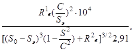
где Rв - радиус вертикальной кривой, м; С - расстояние от водителя до плоскости вертикальной кривой или ее хорды в плане, м (для трассы прямой в плане С = 1,5 м); S0 - расстояние от водителя до начала вертикальной кривой, м; Sэ - расстояние от водителя до экстремальной точки на кривой, м (рис. 14); для вогнутой вертикальной кривой:
Sэ = 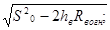
дли выпуклой вертикальной кривой:
Sэ = 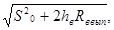
hв - высота глаз водителя над касательной (в продольном профиле) к началу вертикальной кривой, м.
3.4.5. Допустимая длина прямой вставки в продольном профиле, не нарушающая зрительную плавность дороги
lв = 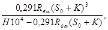
где lв - допустимая длина прямой вставки в продольном профиле, м; Rвα - видимый радиус кривизны вогнутой вертикальной кривой, определенный по формуле (11); S0 - расстояние от водителя до начала вертикальной кривой, м; К - высота глаз водителя относительно вставки согласно рис. 14,б.
Рис. 14. Схема к расчету расстояния от наблюдателя до экстремальной точки на вертикальной кривой:
Н - высота глаз водителя над касательной к началу вертикальной кривой; S0 - расстояние до начала вертикальной кривой
3.4.6. Прямая вставка в продольном профиле не ограничивается, если вогнутая вертикальная кривая совмещена с горизонтальной кривой и угол поворота трассы в плане более 8º.
4.1.1. Для обеспечения зрительной ясности и плавности дороги параметры элементов плана и продольного профиля дороги требуются большие, чем минимальные по СНиП 2.05.02, обеспечивающие безопасность движения при напряженной работе водителя.
Дорога, запроектированная с соблюдением всех требовании СНиП 2.05.02, но с трассой, составленной из минимальных элементов, будет жесткой, не отвечающей требованиям зрительной плавности. В каждом конкретном случае основанием для отказа от минимальных норм должны являться технико-экономические расчеты и требования обеспечения безопасности, зрительной ясности и плавности дороги.
4.1.2. Безопасность движения, зрительная ясность и плавность дороги во многом зависит от расстояния видимости, минимальное значение которого для каждой категории дороги нормируется СНиП 2.05.02. Оно рассчитано из условия ψ =0,4 и времени реакции водителя 1,0 с. Минимальное расстояние видимости можно использовать везде, где его увеличение может привести к резкому возрастанию объемов земляных работ.
Однако повсеместное применение этого норматива приводит к образованию сложных дорожных условий: затрудняется или становится невозможным обгон, в перспективе дороги появляются зрительные провалы, дорога становится зрительно жесткой.
Рекомендуется везде, где это возможно, не нарушая требований СНиП 2.05.02, обеспечивать расстояние видимости из условия выполнения обгона или, как минимум, времени реакции водителя для дорог I категории 2,5 с, 2 и III категорий 2,0 с, IV категории 1,5 с. Рекомендуемые расстояния видимости при расчете вертикальных кривых и срезок видимости на кривых в плане приведены в табл. 1.
4.1.3. Увеличение расстояний видимости снижает количество и особенно тяжесть дорожно-транспортных происшествий и повышает транспортно-экслуатационные качества дороги. Этим компенсируется увеличение стоимости строительства, связанного с дополнительным объемом земляных работ на выпуклых кривых. Расстояние видимости в продольном профиле обеспечивается за счет вертикальных выпуклых кривых. Минимальные радиусы их, если это не приводит к значительному увеличению объема земляных работ, рекомендуется выбирать такими (табл. 2), чтобы они обеспечивали видимость поверхности дороги с ориентацией на время реакции водителя, рекомендуемые п. 4.1.2.
Таблица 1
|
Расстояние видимости, м, при скорости движения, км/ч |
||||
|
80 |
100 |
120 |
150 |
|
|
Минимальные (по СНиП 2.05.02) в сложных условиях рельефа |
125 |
175 |
225 |
300 |
|
Допустимое ограничение видимости (не чаще 1 раза на 2 км) |
250 |
280 |
340 |
400 |
|
Обеспечение безопасности движения, зрительной ясности и плавности дороги |
450 |
500 |
600 |
700 |
Таблица 2
|
Минимальные радиусы вертикальных выпуклых кривых, м, при расчетной скорости, км/ч |
||||
|
80 |
100 |
120 |
140 |
|
|
По СНиП 2.05.02 в сложных условиях (расчетное время реакции водителя tр=1с) |
5000 |
10000 |
15000 |
25000 |
|
Обеспечение зрительной ясности и плавности дороги (tр=1,5 ÷ 2,0 с) |
10000 |
12000 |
18000 |
35000 |
|
Обеспечение удобных условий движения (психологически безопасная дорога) |
15000 |
20000 |
30000 |
45000 |
4.1.4. Длинную прямую в плане, вызывающую снижение надежности работы водителя, монотонность движения, повышенную аварийность и нарушающую зрительную плавность в продольном профиле, рекомендуется ограничивать. Ее предельная длина зависит от плотности и скорости транспортного потока. Продолжительность движения в потоке малой интенсивности не должна превышать 3,0 мин (табл. 3).
4.1.5. Следует ограничивать не только длины прямых, но и их количество. Две прямые, разделенные одной кривой в плане, воспринимаются как единый монотонный участок дороги. Исключить ощущение монотонности можно лишь разделением длинных прямых участком с криволинейной трассой. Длина такого участка должна быть достаточной для отвыкания водителя (в течение 2,5-3 мин) от предыдущего монотонного участка. Этот участок не должен иметь прямые вставки между кривыми в плане длиннее 700 м для дорог I категории и 350 м II-IV категории.
Для дорог I категории длина криволинейного в плане участка должна быть в равнинной местности более 5 км, в пересеченной - более 8 км. Для дорог II-IV категорий длина такого участка в равнинной местности должна быть более 5,0 км, в пересеченной - более 3 км, а углы поворота трассы на этих участках более 8°.
4.1.6. Ограничение длин прямых и увеличение извилистости трассы не должны выполняться формально. Причина появления угла поворота трассы должна быть не только оправдана с инженерных позиций, но и быть попятной и логичной для водителей и пассажиров. Такими причинами являются грунтово-геологические условия, к которым откосятся участки поверхностного заболачивания, места с необеспеченным стоком, участки с засоленными грунтами. Существенными являются требования к охране окружающей среды - сохранение ценных земель, лесов, отдельных рощ и малых лесных массивов в малолесных степных районах, а также форм рельефа, определяющих поверхностный сток. Обходить следует участки с частым образованием тумана, гололеда.
Таблица 3
|
Расчетная интенсивность движения |
Расчетная продолжительность движения по прямой, мин |
Предельная длина прямой, км* |
|||
|
авт/ч |
авт/сут |
в равнинном рельефе |
в пересеченном рельефе |
||
|
1 |
>500 |
> 10000 |
3,0 |
3,5-5,0 |
2,0-3,0 |
|
До 500 |
До 10000 |
1,5 |
2,2-3,5 |
1,5-2,0 |
|
|
2 |
75-150 |
3000-7000 |
3,0 |
3,0-3,5 |
1,5 |
|
3 |
25-75 |
1000-3000 |
2,0 |
2,0-2,2 |
1,6 |
|
4 |
До 25 |
До 1000 |
1,5 |
1,5-1,7 |
1,5 |
*Большую длину прямых следует принимать при преимущественно легковом движении, меньшую - при грузовом.
Таблица 4
|
Радиусы однозначно воспринимаемых кривых, м, при уровне загрузки дороги движением |
|||
|
0-0,5 |
0,5-0,7 |
>0,7 |
|
|
1 |
200-300 |
200-250 |
200-400 |
|
2 |
300-400 |
250-300 |
400-800 |
|
3 |
400-600 |
300-400 |
800-1200 |
|
4 |
600-800 |
400-500 |
>1200 |
|
5 |
800-1200 |
500-700 |
|
|
6 |
1200-2000 |
700-1000 |
|
|
7 |
>2000 |
1000-2000 |
|
4.1.8. На кривых в плане следует избегать минимальных радиусов. При этом необходимо учитывать, что водители и пассажиры воспринимают улучшение дорожных условий, в том числе и улучшение зрительной плавности дороги, дискретно. Два закругления, радиусы которых отличаются на величину, меньшую критической, воспринимаются как однозначные.
Все радиусы кривых по условиям их восприятия разделены на классы. При выборе радиусов кривых следует стремиться, чтобы их величины находились как можно ближе к правой границе класса. Улучшение зрительной ясности и плавности дороги возможно лишь при переходе в следующий класс (табл. 4).
В сложных условиях, когда необходимо использовать кривые в плане минимальных радиусов, для обеспечения зрительной ясности и плавности дороги с учетом 3.2.6 рекомендуются следующие минимальные радиусы кривых в плане (табл. 5).
При выборе радиуса кривой в плане следует учитывать ее расположение относительно ближайшей вертикальной кривой, которая определяет высоту глаз водителя над; поверхностью горизонтальной кривом. Эту высоту Н рассчитывают согласно рис. 4 и 5 и п. 3.2.4. Минимальный радиус кривой в плане, обеспечивающий зрительную плавность дороги, можно определить по рис. 15. Выбранный радиус кривой должен удовлетворять требованиям пп. 5.11, 5.17, 5.18.
Таблица 5
|
Радиусы кривых в плане, м |
|||
|
минимальные по СНиП |
класс однозначно воспринимаемых кривых |
минимальные из условия обеспечения зрительной ясности |
|
|
Iа |
1200 |
1000-2000 |
2000 |
|
Iб |
800 |
800-1200 |
1200 |
|
II |
800 |
800-1200 |
1200 |
|
III |
600 |
600-800 |
800 |
|
IV |
300 |
300-400 |
400 |
Рис 15. Соотношения радиусов кривых в плане и высот глаз наблюдателей над поверхностью кривой, обеспечивающие зрительную плавность дороги
Зрительную плавность закругления в плане без переходной кривой необходимо проверять согласно п. 3.2.6, выбирая наиболее неблагоприятные направления движения: движение на подъем, движение со стороны, где выпуклая вертикальная кривая длиннее, равна горизонтальной кривой или короче ее менее, чем на 200 м.
5.1. Под зрительной плавностью дороги понимают такие сочетания ее элементов в плане и продольном профиле, при которых обеспечивается необходимое соотношение видимых элементов дороги и кривизны линии, образующих перспективное изображение дороги.
5.2. Смежные элементы дороги должны иметь такие характеристики, чтобы возможная скорость движения на них различалась не более, чем на 20 %. Наилучшие условия движения - при обеспечении постоянной скорости и отсутствии необходимости частых торможений.
5.3. Трасса дороги должна проектироваться как пространственная линия. План трассы и продольный профиль должны проектироваться одновременно, их элементы должны быть взаимно увязаны. Внешний вид дороги, ее зрительная ясность и плавность зависят не только от параметров плана и продольного профиля, но и от взаимного расположения элементов (рис. 16).
5.4. Минимальные радиусы кривых, применяемые в исключительных случаях, указаны в СНиП 2.05.02. В остальных случаях величину радиуса кривой и плане назначают по табл. 6. Радиусы двух сопрягаемых кривых в плане должны различаться не более, чем на 30 %, а возможная скорость движения на них не более, чем на 20 %.
Таблица 6
|
Характеристика угла |
Кривые в плане |
|
|
До 1 |
Углы невидимые |
Без разбивки кривых |
|
1-8 |
Малые углы |
Чем меньше угол, тем больше радиусы кривой (2000-13000), длина кривой более 350 м |
|
8-20 |
Нормальные углы |
Круговые кривые с радиусом от 1000 м до 6000 м, клотоидное трассирование |
|
>20 |
Большие углы поворота |
Клотоидное трассирование |
|
План |
Продольный профиль |
Перспективное изображение дороги |
|
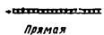 |
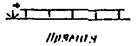 |
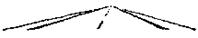 |
|
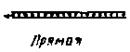 |
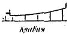 |
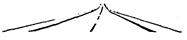 |
|
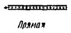 |
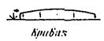 |
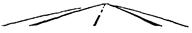 |
|
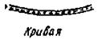 |
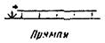 |
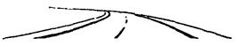 |
|
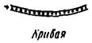 |
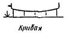 |
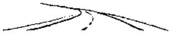 |
|
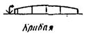 |
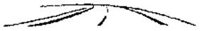 |
Рис. 16. Влияние сочетаний элементов плана и продольного профиля на вид дороги в перспективе
5.5. Следует избегать малых углов (менее 8°) поворота в плане. При таких углах поворот кажется зрительно резким и существенно улучшить его плавность не удается даже вписыванием кривых очень большого радиуса (рис. 17).
Рис. 17. Нарушение зрительной плавности дороги на участке с малым углом поворота в плане
Таблица 7
|
Наименьшие радиусы кривых в плане, м |
Наименьшие параметры клотоид, м |
Угол поворота в плане, град |
Наименьшие радиусы кривых в плане, м |
Наименьшие параметры клотоид, м |
|
|
1 |
13000 |
1200 |
5 |
2500 |
800 |
|
2 |
8300 |
1200 |
6 |
2200 |
700 |
|
3 |
6000 |
1200 |
7 |
2000 |
600 |
|
4 |
3500 |
1000 |
8 |
2000 |
500 |
Чем меньше угол поворота в плане, тем больше должен быть радиус кривой (табл. 7). Длина кривой должна быть более 350 м, биссектриса - более 5 м.
Если поворот в плане на угол менее 8° необходим, его следует совмещать с вершиной вертикальной кривой, а закругление проектировать из двух симметричных клотоид.
5.6. Не рекомендуется короткая прямая вставка между направленными в одну сторону кривыми в плане, так как это приводит к появлению зрительного излома дороги (рис. 18). Прямая вставка в плане не нарушает зрительной плавности дороги только в том случае, если она сопряжена с кривой в плане большого радиуса и ее видимые угловые размеры не более 0,1Rα (Rα - видимый радиус кривизны ведущей линии в экстремальной точке). В этом случае прямая вставка не видна и все закругление воспринимается как единое и зрительно плавное. Если видимая длина прямой вставки более 0,1 Rα, рекомендуется либо увеличить радиусы кривых в плане или параметры клотоид (чтобы увеличить длину переходных кривых), либо применить клотоидное трассирование и подбором параметров клотоид устранить прямую вставку.
Не рекомендуются короткие прямые вставки между S-образными кривыми. В этом случае следуем оба закругления проектировать как составные из клотоид (см. п. 7.6).
Прямая вставка допускается, если она воспринимается как самостоятельный элемент трассы. В этом случае длина ее должна быть для двухполосных дорог II-IV категорий более 300 м, I категории с многополосной проезжей частью - более 700 м.
5.7. Не рекомендуется короткая кривая между длинными прямыми. Такой поворот воспринимается как излом дороги. Следует стремиться, чтобы длины прямых и кривой между ними были соразмерны. Рекомендуемые соотношения для равнинной местности приведены в табл. 8.
5.8. Зрительная плавность закругления с переходными кривыми всегда лучше, чем без них. С этих позиций переходные кривые рекомендуется вписывать в закругления с радиусом основной кривой 3000 м и менее.
Переходная кривая улучшает зрительную, плавность закругления, если ее длина обеспечивает расположение на ней экстремальной точки. Для обеспечения этого условия длина переходной кривой должна, быть большей, чем минимальная из расчета обеспечения расчетного нарастания центробежного ускорения
L > 0,1.
Рис. 18. Нарушение зрительной плавности дороги прямой вставкой в плане трассы
Таблица 8
|
Наименьшая длина кривой в плане, м |
Наименьший радиус кривой, м * |
|
|
≥2000 |
500 |
2R*min |
|
1000 |
400 |
1,2 Rmin |
|
≤500 |
350 |
Rmin |
* Rmin - минимальный радиус для каждой категории дорог согласно СНиП 2.05.02.
Угол поворота трассы в конце этих кривых не менее 3°
5.9. Следует избегать обертывающей линии и продольном профиле. Подчинение трассы даже отдельным мелким формам рельефа приводит к зрительным провалам и биению трассы. Этот недостаток не устраняется даже криволинейностью трассы в плане (рис. 19). Особенно следует избегать вогнутой вертикальной кривой, сопрягающейся с короткими выпуклыми вертикальными кривыми. Образующийся при этом прогиб проектной линии создает участок дороги со зрительным провалом, устранить который при прямолинейной в плане трассе невозможно. Такой прогиб следует рассматривать как ошибку проектирования.
При длине прогиба более 1 км и стрелке прогиба менее 6 м зрительную плавность дороги следует проверять согласно п. 3.2. Если трасса в плане криволинейна, длина прогиба может быть уменьшена, а зрительная плавность его должна быть проверена согласно п. 3.3.
5.10. Наибольшая плавность дороги достигается при проектировании продольного профиля из вогнутых и выпуклых кривых большего радиуса непосредственно сопрягающихся друг с другом без прямых вставок (рис 20). Если по условиям проектирования прямая вставка необходима, длина ее должна быть ограничена. Для прямолинейных в плане участков дорог допустимую длину прямой вставки в продольном профиле можно определить по графику на рис. 21, 22. Сохранение зрительной плавности на таких участках дорог рекомендуется проверить согласно п. 3.4.
Рис. 19. Нарушение зрительной плавности дороги на участках с обертывающей линией в продольном профиле
Рис. 20. Улучшение зрительной плавности дороги заменой прямой вставки в продольном профиле вертикальной кривой большого радиуса
Рис. 21. Наибольшая длина прямой вставки между двумя вертикальными кривыми на дорогах I технической категории. Цифры на кривых (20-80 ‰) - алгебраическая разность уклона прямой вставки и точки стояния
Рис. 22. Наибольшая длина прямой вставки между двумя вертикальными кривыми на двухполосных дорогах II-V технической категории. Цифры на кривых - алгебраическая разность уклонов прямой вставки и точки стояния
При совмещении прямой вставки с кривой в плане и при клотоидной трассе длину прямой вставки в продольном профиле можно не ограничивать.
Если прямая вставка в продольном профиле совмещена с кривой в плане лишь частично, то ее длину, влияющую на зрительную плавность дороги, следует определять как расстояние между концами кривой в плане и вертикальной кривой.
5.11. Рекомендуется совмещать кривые в плане с вертикальными выпуклыми кривыми. Желательно, чтобы длина кривой в плане была больше длины вертикальной кривой или равна ей. Допустимое смещение кривых не должно превышать 1/4 длины меньшей из них. Видимая часть длины кривой в плане должна иметь угол поворота в плане не менее 3º (рис. 23).
5.12. При совмещении кривой в плане Rпл и выпуклой в вертикальном профиле Rвып рекомендуется из условия обеспечения зрительной плавности и ясности дороги выдерживать соотношение
Rвып : Rпл ≥ 8.
5.13. Совмещение кривой в плане и вогнутой вертикальной кривой допускается только в случае, если любой из продольных уклонов и алгебраическая разность сопрягаемых продольных уклонов менее максимального, допущенного на дороге. В этом случае рекомендуется соотношение
Rвогн : Rпл ≥ 6,
где Rвог - радиус вогнутой вертикальной кривой, м; Rпл - радиус кривой в плане, м.
5.14. При трассировании дороги углы поворота необходимо назначать там, где будут, расположены выпуклые переломы в продольном профиле, в первую очередь на резких выпуклых переломах поверхности земли. Недопустимо размещать кривую в плане на прямой в продольном профиле вблизи от вертикальной выпуклой кривой. Угол поворота следует отнести к ближайшему понижению рельефа или к выпуклости.
5.15. Сочетания вогнутых и выпуклых кривых создают волнистость дороги в продольном профиле. Зрительную плавность таких участков рекомендуется оценивать согласно п. 3.3. Рекомендуется при сопряжении вогнутой и выпуклых кривых выдерживать соотношение
Rвып : Rвогн ≥ 2.
При этом в качестве ведущего выбирают радиус выпуклой кривой согласно п. 4.1.3 и табл. 2.
Рис. 23. Обеспечение зрительной плавности дороги совмещением горизонтальных и вертикальных кривых
Рис. 24. Извилистость дороги, вызванная превышением числа углов поворота в плане над числом переломов в продольном профиле
5.16. Число переломов в плане и продольном профиле, по возможности, должно быть одинаковым.
Частые переломы в продольном профиле на длинных прямых в плане создают волнистую поверхность дороги. Если углов поворота в плане больше, чем переломов в продольном профиле, появляются извилистые участки с постоянным продольным уклоном, а вид участка представляется логически неоправданным (рис. 24).
Если кривая в плане расположена в конце спуска длиною более 500 м и с уклоном более 30 ‰, радиус ее должен быть увеличен не менее, чем в 1,5 раза по сравнению с минимально допустимым. Такую кривую следует совмещать с вогнутой вертикальной кривой.
5.18. Следует избегать сопряжения концов кривых в плане с началом выпуклых и вогнутых вертикальных кривых, располагаемых на последующих прямых в плане. В первом случае со стороны вертикальной кривой неясно дальнейшее направление дороги (рис. 25), а во втором - создаются участки с малой видимостью в свете фар.
5.19. Следует избегать сочетаний элементов трассы, создающих впечатление зрительного провала. К ним относятся короткие (из-за малого радиуса) вертикальные вогнутые кривые, располагаемые на длинных прямых или кривых в плане (рис. 26), а также выпуклые вертикальные кривые малых радиусов на длинных прямых (рис. 27).
Рис. 25. Нарушение зрительной ясности дороги из-за сопряжения концов горизонтальной и вертикальной кривой
Рис. 26. Зрительные провалы на дороге, вызванные кривыми малого радиуса в продольном профиле
Рис. 27. Нарушение зрительной плавности дороги вертикальной кривой малого радиуса, создающей впечатление зрительного провала
Рис. 28. Нарушение зрительной плавности дороги прямолинейным мостом
Рис. 29. Нарушение зрительной ясности дороги мостом с выпуклой проезжей частью
Рис. 30. Удачное расположение моста на криволинейном участке дороги
Рис. 31. Улучшение вида дороги за счет расположения моста на кривой в плане большого радиуса
Рис. 32. Нарушение зрительной ясности дороги на участке с извилистым планом трассы и вертикальными кривыми малого радиуса
Рис. 33. Нарушение зрительной ясности дороги из-за расположения двух кривых в плане в пределах одной вертикальной кривой
5.20. Мосты, в том числе и с большими пролетами, должны полностью подчиняться направлению трассы. Прямолинейные мосты небольшой длины, расположенные между горизонтальными или вертикальными кривыми, создают впечатление переломов дороги (рис. 28).
5.21. Неприятны на вид и опасны для движения мосты, с выпуклой проезжей частью, расположенные на прямой (рис. 29).
5.22. Во избежание неудачных сочетаний малые и средние мосты желательно располагать в соответствии с общим направлением дороги на кривых в плане (рис. 30) и в продольном профиле (рис. 31). При этом следует соблюдать требования НСП 102-52.
Осложнение конструкций моста оправдывается в этом случае улучшением эстетических качеств трассы дороги и повышением безопасности движения.
5.23. Пересечения дорог, в разных уровнях, расположенные на прямых участках, имеют участки с недостаточной видимостью за вершиной путепровода. Поэтому желательно располагать путепроводы на кривых в плане с радиусом более 1000 м при угле поворота более 8°.
6.1. Зрительная ясность дороги - это ясность в направлении дороги на достаточно большом расстоянии, позволяющая водителю оценивать и прогнозировать дорожные условия. Видимые участки дороги и придорожной полосы должны заблаговременно сигнализировать об изменении направления дороги. Расстояние, на котором необходимо обеспечивать зрительную ясность дороги, должно быть больше расстояния видимости при обгоне.
6.2. Наиболее опасны участки, неверно ориентирующие водителя о дальнейшем направлении дороги, и участки, на которых в течение даже короткого времени дальнейшее направление определить невозможно.
6.3. Следует избегать расположения S-образных кривых в плане на участках с вертикальными кривыми минимальных радиусов (рис. 32, 33). При неизбежности такого сочетания рекомендуется увеличивать радиус вертикальной выпуклой кривой до тех пор, пока не будет обеспечена видимость начального участка второй кривой в плане на длине, соответствующей углу поворота не менее, чем на 3°.
Рис. 34. Нарушение зрительной ясности дороги применением обертывающей линии с малыми радиусами вертикальных кривых, создающих волнистый продольный профиль
Рис. 35. Метод обеспечения зрительной ясности дороги на участках ложного хода:
а - ложный ход; б - исправленный участок
6.4. Нежелателен волнистый продольный профиль с глубокими провалами на вогнутых формах рельефа (рис. 34). Улучшить такие участки можно за счет увеличения радиусов вертикальных кривых.
6.5. Наиболее частая ошибка, вызывающая создание так называемого ложного хода и неверную ориентацию водителя о дальнейшем направлении дороги, связана с расположением примыканий дорог и проектированием обходов населенных пунктов. Для устранения ложного хода следует подчеркнуть посадками деревьев, установкой ограждений и направляющих сооружений главное направление дороги, а примыкание перенести на кривую (рис. 35).
7.1. Клотоидной называют трассу, запроектированную преимущественно из сопрягающихся переходных и круговых кривых. Прямые вставки невелики или совершенно отсутствуют. Переходная кривая становится основным элементом трассы в плане.
7.2. Принцип трассирования клотоидной трассы отличен от обычного. Рекомендуется выполнять последовательно следующие этапы:
а) определить границы полосы варьирования. С этой целью на основании анализа рельефа, грунтово-геологических и гидрогеологических условий, учета требований охраны окружающей среды и основных требований архитектурно-ландшафтного проектирования определяют полосу, в пределах которой возможна укладка плана трассы. Желательно, чтобы ширина этой полосы была не менее 150-300 м;
б) в пределах полосы варьирования с помощью гибких линеек (в крайнем случае, от руки) на плане наносят плавную линию, скользящую по горизонталям и огибающую основные формы рельефа, населенные пункты, рощи и объекты, подлежащие сохранению. При этом необходимо следить за тем, чтобы наиболее крутые части этой линии попадали на выпуклые участки рельефа, на которых впоследствии будут разбиты вертикальные выпуклые кривые;
в) с помощью шаблонов в полученную линию вписывают круговые и переходные кривые, стремясь длины прямых вставок свести к минимуму.
Рис. 36. Определение положения и величин углов поворота трассы в плане при клотоидном трассировании
Затем с учетом выбранных параметров переходных и круговых кривых выполняют детальный расчет трассы.
Рекомендуемый масштаб карт для клотоидного трассирования 1 : 10000, 1 : 250000.
7.3. Угол поворота в клотоидной трассе определяют расчетом через угол поворота в конце клотоиды β (рис. 36)
β = L / 2R
Углы поворота должны быть более 6°. В противном случае зрительная плавность дороги на этом участке не будет обеспечена, так как угол поворота в конце переходной кривой будет меньше 3° и весь участок будет восприниматься как излом. Совмещать горизонтальные и вертикальные кривые необходимо и при клотоидном трассировании. При этом рекомендуется выдерживать следующие требования:
а) число переломов в продольном профиле и углов поворота в плане должно быть одинаковым;
б) не рекомендуется располагать на одной кривой в плане несколько переломов в продольном профиле (в клотоидной трассе одним закруглением считают участки смежных клотоид от их начала или от точек с радиусом кривизны 5000 м, если в трассе используются отрезки клотоид);
в) вершину вертикальной кривой следует совмещать с участком кривой в плане, имеющей наименьший радиус кривизны; смещение вершины вертикальной кривой неизбежно вызывает расположение наиболее крутой части закругления в плане на участке с большим продольным уклоном и чем больше такое смещение, тем больше продольный уклон на кривой в плане, что отрицательно сказывается на безопасности движения. Рекомендуется на участке клотоидной трассы с радиусом кривизны менее 2000 м для дорог I категории и 1500 м для дорог II и III категорий предельный продольный уклон назначать не более 30 ‰;
г) вертикальная кривая должна перекрывать часть клотоиды в плане на участке с радиусом кривизны менее 5000 м. Не допускается размещать конец вертикальной кривой на квазипрямых участках. Если это условие выполнить нельзя, рекомендуется изменить положение трассы в плане или сместить вершину перелома в продольном профиле.
7.4. Клотоидное трассирование предполагает использование не только переходных, но и круговых кривых и прямых. При этом необходимо соблюдать следующие условия:
а) протяженность участков дороги, протрассированных прямыми, не должна превышать 20 % от общей длины дороги, включая и квазипрямые - начальные участки переходных кривых с отклонением от тангенсов менее, чем на 0,25 м;
б) длины прямых и разделяющих их криволинейных участков должны исключать опасность появления монотонных условий движения и должны назначаться согласно пп. 4.1.4, 4.1.7;
в) желательно, чтобы общая длина криволинейных участков была не менее 80 % длины дороги, а на долю переходных кривых приходилось бы более 30 % для дорог IV категории и более 50 % I-III категорий.
7.5. Применение прямых в трассе дороги в равнинной степной местности со слабо выраженными формами рельефа логически оправдано, но при этой необходимо ограничивать длину прямых согласно п. 3.1.4. Общая их длина в таком рельефе может достигать 50 %. В пересеченном рельефе или при долинном ходе длинные прямые вообще могут быть устранены или заменены переходными кривыми больших параметров или круговыми кривыми большого радиуса (более 4000 м).
7.6. Для обеспечения зрительной плавности рекомендуется исключать прямые вставки в клотоидной трассе. Вид дороги с короткими прямыми вставками такой же, как на рис. 18. Прямая в плане допускается только в том случае, если она воспринимается как самостоятельный элемент. Для этого наименьшая длина ее вместе с квазипрямыми должна быть не менее 400 м в равнинном и 300 м в пересеченном рельефе.
7.7. Параметры клотоид при клотоидном трассировании должны быть значительно большими чем из условия только обеспечения, плавного нарастания центробежного ускорения. Это необходимо для обеспечения зрительной плавности дороги и сокращения количества длин прямых. Параметры переходных кривых выбираются из условия обеспечения угла поворота в конце переходной кривой более 3º. Это условие выполняется при соотношении
A >0,1R,
где R - радиус кривизны в конце переходной кривой, м.
7.8. Минимальный параметр переходной кривой в зависимости от расчетной скорости движения не должен быть меньше следующих значений:
расчетная скорость, км/ч....................................................... 80 100 120 150
минимальный параметр, м.................................................... 160 260 390 517
7.9. Максимальные параметры клотоид ограничивают из условия обеспечения возможности более точной оценки водителем расстояний и скорости движения автомобилей. Из этих условий максимальный параметр переходной кривой должен быть не более А = 1200 м.
Из условий ограничения длины квазипрямых рекомендуется выдерживать соотношение:
Аmax < Rк,
где Rк - радиус кривизны в конце переходной кривой, м.
7.10. Параметры клотоид должны обеспечивать зрительную ясность и плавность дороги. По величине конечного радиуса клотоиды следует установить по рис. 37 интервал параметров клотоид, обеспечивающих зрительную ясность дороги, а по рис. 38 минимальный параметр, обеспечивающий зрительную плавность дороги. Расчетный параметр должен удовлетворять обоим условиям.
Рис. 37. Рекомендуемые параметры клотоид (не заштрихованная область)
Рис. 38. Соотношение между параметром клотоиды и величиной Н, определенной по рис. 5 или 6
Для переходных кривых с конечным радиусом 3000 м и более рекомендуется использовать клотоиду только с одним параметром - 1200 м.
7.11. Параметры смежных клотоид не должны различаться более, чем в 1,5 раза
A1 : A2 < 1,5.
7.12. Зрительная плавность дороги с клотоидной трассой улучшается, если S-образная кривая в плане проектируется как одна клотоида (рис. 39, а). В этом случае желательно, чтобы выполнялось равенство
A1 = A2
В пересеченной местности для кривых, направленных в одну сторону, рекомендуется применять клотоиды, стыкующиеся в точке с R = ∞ с соотношением А1 : А2 = 1,2 (рис. 39, б). Клотоида большего параметра должна находиться на участке с меньшим продольным уклоном (аналогично требованию увеличения радиуса кривой в плане в конце спуска).
7.13. При клотоидном трассировании вираж рекомендуется устраивать на участках, где радиус кривизны менее 3000 м. На остальной части клотоид устраивают двускатный поперечный профиль.
7.14. Длину отгона виража выбирают из условия, чтобы дополнительный продольный уклон по внешней кромке проезжей части был не менее 3-5 ‰. Это обеспечивается при длине отгона виража 80-140 м. Участок отгона виража рекомендуется располагать между точками с радиусами кривизны 4000-6000 и 3000 м.
Расстояние от начала клотоиды до начала отгона виража l1 и конца отгона виража l2 определяют по формулам
l1 = А2/R1; l2 = А2/R2,
где А - параметр клотоиды, м; R1 - радиус кривизны в начале отгона виража, м. Для дорог I категории R1 = 3000 м, для других категорий R1 = 2000 м; R2 - радиус кривизны в конце участка отгона виража. Для дорог I категории R2 = 1000 м, для дорог II категории - 800 м, III и IV категорий - 600 м.
Дополнительный продольный уклон (Δi) внешней кромки проезжей части не должен превышать: для дорог I-II категорий - 5 ‰. III-IV категорий - 10 ‰.
Необходимо выдерживать условие
где ΔН - поднятие внешней кромки проезжей части для создания уклона виража, м.
Рис. 39. Расположение клотоид в плане трассы:
а - на двух обратных кривых; б - на двух близко расположенных закруглениях; А - параметр клотоиды; Rс1 - радиус кривизны в конце клотоидной кривой
7.15. Для обеспечения зрительной плавности дороги с клотоидной трассой рекомендуется выдерживать требования пп. 4 и 5. Применение клотоид в трассе дороги не является гарантией обеспечения зрительной плавности. Необходимо обеспечивать требования к взаимному сочетанию элементов плана и продольного профиля дороги. Клотоидное трассирование облегчает выполнение этих требований.
7.16. Для оценки зрительной плавности и ясности дороги с клотоидной трассой используют рекомендации и формулы, изложенные в главе 3.
8.1. Дорогу рекомендуется прокладывать по границе форм ландшафта (у подножия холмов, по опушке леса, по трассе речной долины, краю ноля) или вдоль естественной оси ландшафта (вдоль водораздела, водотока, берега водоема, линии железной дороги). Каждый поворот трассы должен быть оправдан наличием ясно видимого контурного или высотного препятствия. Если препятствие, вызвавшее поворот дороги, мало заметно, следует создавать зрительный ориентир (кажущуюся причину поворота) средствами озеленения или оформления дороги.
8.2. В СССР встречаются следующие группы природных ландшафтов: равнинные (степной, ландшафт заболоченных или орошаемых низменностей; лесисто-болотистый), холмистые (пересеченный рельеф лесостепи, мореный ландшафт, речные долины), горные (предгорья и побережья, долины горных рок, высокогорные перевальные участки).
8.3. Степной ландшафт. Несмотря на техническую возможность устройства длинных прямых их длину следует ограничивать согласно рекомендациям пп. 4.1.4-4.1.7, назначая малые углы поворота (желательно более 8°) с вписыванием в них кривых большого радиуса. Оси прямых участков, где это возможно, следует направлять на заметные издалека ориентиры или доминанты (роща на холме, гора, высокое здание, заводские трубы, шахтные терриконы).
Следует избегать пересечения глубоких долин, малых степных рек прямыми в плане. Спуск в речную долину рекомендуется прокладывать длинной кривой в плане (биклотоидной или круговой кривой с радиусом более 2000 м). Эта кривая должна полностью перекрывать вертикальную выпуклую, кривую в начале спуска.
Невысокие насыпи устраивают с пологими откосами (1:3 или 1:5) и округлением бровок земляного полотна и подошвы откосов. В выемках также устраивают обтекаемые откосы со скруглением бровок полотна.
8.4. Ландшафт заболоченных низменностей. Прямолинейные каналы и каналы, расчленяющие территорию на сетку прямоугольников, предопределяют трассирование дорог прямыми по направлениям каналов. Прямые следует по возможности направлять на высокие ориентиры или создавать такие ориентиры средствами озеленения.
В заболоченных низменностях рекомендуется рядовое (аллейное) озеленение в 1-3 ряда высокими деревьями влаголюбивых пород. Такие посадки служат указателями дальнейшего направления дороги.
8.5. Лесисто-болотистый ландшафт. Рекомендуется трассу дороги прокладывать с углами более 8° с кривыми больших радиусов или клотоидами больших параметров. Длины прямых следует ограничивать согласно пп. 4.1.4-4.1.7.
Расстояние видимости поверхности дороги рекомендуется обеспечивать согласно пп. 4.1.2, 4.1.3.
Следует обеспечивать видимости направления дороги на расстоянии не менее 1,0-1,5 км. Если по условиям проектирования ограничение видимости направления дороги неизбежно, то протяженность участков с видимостью менее. 1,0-1,5 км, по продолжительности проезда, должно быть не более 10-15 с при фактической скорости движения.
Наиболее целесообразно прокладывать дорогу вдоль опушки лесных массивов. При неизбежности их пересечения следует избегать длинных прямых. Вход в лесной массив следует проектировать на кривой большого радиуса, располагая для этого вершину угла поворота на опушке леса. Расчистку полосы отвода дороги, а в отдельных случаях и посадку отдельных деревьев, следует выполнять согласно рекомендаций главы 9. Земляное полотно в насыпи и в выемках рекомендуется проектировать обтекаемого профиля.
8.6. Холмистый ландшафт лесостепи и мореный ландшафт. Рекомендуется до начала прокладки трассы выявить основные формы рельефа, с которыми должна быть увязана трасса, без подчинения мелким второстепенным элементам. Чем выше категория дороги и шире земляное полотно, тем с более крупными элементами рельефа должна увязываться дорога.
Трассу целесообразно прокладывать в виде плавной извилистой линии, вписывающейся в рельеф и повторяющей основные линии ландшафта. Очень важно обеспечить равенство количества углов поворота в плане и переломов в продольном профиле, а также совмещение вертикальных выпуклых и горизонтальных кривых.
Дороги I-III категорий рекомендуется прокладывать клотоидными трассами, без прямых вставок. Для дорог I категории на косогорных участках целесообразно раздельное трассирование. Каждая раздельно трассируемая часть дороги должна удовлетворять требованиям безопасности движения и обеспечению зрительной плавности и ясности.
8.7. Ландшафт речных долин. Согласование с ландшафтом речных долин определяется природными факторами, совпадающими с направлением дороги - водотоком и расположением речных террас. Следует избегать проложения трассы по узким, извилистым долинам и использовать широкие долины, позволяющие назначать углы поворота менее 20° и большие радиусы кривых. Кривизна и длина кривых в плане должна соответствовать основной форме изгиба берега водоема. Рекомендуется при трассировании вдоль водохранилищ и озер сохранять одинаковое расстояние до уреза воды.
8.8. Горные ландшафты. Согласование трассы дорог II-IV категорий, с горным ландшафтом сводится к огибанию элементов горного рельефа с небольшими отклонениями от них для соблюдений требований к параметрам и сочетаниям элементов плана и продольного профиля.
Дорога становится господствующим и организующим элементом горного ландшафта и геометрическая правильность ее очертаний подчеркивает ее монументальность и служит характеристикой ее технического уровня.
Повсеместно рекомендуется клотоидное трассирование. Следует избегать даже коротких прямых в плане. Короткие выступы скал при трассировании долинным ходом в узких ущельях обходить не рекомендуется, предпочтительнее устраивать короткий тоннель или полутоннель под выступом скалы, или пересечь водоток дважды (в этом случае, необходимы два моста, но длина дороги и ее стоимость могут быть уменьшены).
Не следует допускать высоту крутых откосов выемок и скальных обнажений, вдоль дороги с верховой стороны более 4-5 м. На кривых около выемок и полувыемок обязательно устройство барьерных ограждений или парапетов из камня, которые служат направляющими элементами зрительного ориентирования.
Верховые подпорные и одевающие стены, которые видны с дороги, не должны превышать 3,5 м. Эти стены рекомендуется устраивать постоянной или плавно изменяющейся высоты. Следует избегать ступенчатого очертания подпорных и одевающих стен.
Внешнюю поверхность верховых подпорных и одевающих стен не следует делать вертикальной, чтобы не создать эффекта падающей стены. Внешняя поверхность стены должна быть наклонена в сторону склона не менее, чем на 10º.
9.1. Проектирование мероприятий по озеленению автомобильных дорог преследует следующие цели:
техническое - снегозадержание, противоэрозийные мероприятия (укрепление склонов откосов, оврагов, закрепление песков, оползней), задержание снега на лавиноопасных участках, дренирование почв;
обеспечение безопасности движения и зрительное ориентирование - создание системы ориентиров для оптического трассирования, предупреждение о местах, требующих особого внимания водителей, защита от бокового ветра, ослепления фарами встречных автомобилей, частичная замена или усиление ограждающих устройств, улучшение ритма движения;
санитарно-гигиенические - улучшение микроклимата площадок мест отдыха и комплексов обслуживания, защита от шума, пыли и вредных газов в местах стоянки и местах отдыха у дороги;
архитектурно-ландшафтные и эстетические - формирование единого стиля дороги - создание системы доминант, улучшение существующего ландшафта, подчеркивание существующих композиций, создание единого фона, декорирование неэстетичных мест, членение территории для обеспечения их восприятий и увязки дороги с ландшафтом местности.
В зависимости от местных условий следует стремиться к использованию придорожных посадок для выполнения нескольких задач. Все работы no озеленению дорог должны выполняться в соответствии с «Рекомендациями по изысканиям и проектированию снегозадерживающих лесных полос вдоль, автомобильных дорог, 1981 г.».
Типы и виды озеленения дорог приведены в приложении 1.
9.2. Подбор пород деревьев и кустарников для озеленения дорог производится в соответствии с местными почвенными и климатическими условиями. В зависимости от степени загазованности придорожной полосы рекомендуется подбирать породы в соответствии с приложением 2.
При подборе пород деревьев следует учитывать характер психологического воздействия форм деревьев на человека (см. приложение 3).
9.3. Деревья и кустарники, применяемые для озеленения дорог, делятся на следующие категории по высоте во взрослом состоянии:
деревья первой категории 24-30 м и выше; второй 10-20 м; третьей ниже 10 м;
Таблица 9
|
Расстояние, м |
||
|
до кустарника |
до дерева |
|
|
Наружные стены зданий и сооружений |
5,0 |
1,5 |
|
Бровка земляного полотна насыпей |
3,5 |
3,5 |
|
Кромка проезжей части |
5,0 |
5,0 |
|
Кромка тротуаров |
0,7 |
0,5 |
|
Наружные бровки водоотводных каналов |
2,0 |
1,0 |
|
Опоры осветительной сети, грани опоры путепроводов |
4,0 |
- |
|
Подошва или внешняя грань подпорных стенок |
3,0 |
1,0 |
|
Бровки крутых откосов |
1,5 |
1.0 |
|
Силовые кабели и кабели связи |
2,0 |
0,7 |
|
Газопровод, канализация, водопровод, дренажи |
2,0 |
- |
|
Тепловые сети (стенки каналов и трубопроводы тепловых сетей при бесканальной прокладке) |
2,0 |
1,0 |
Примечание. Приведенные нормативы относятся к деревьям диаметром кроны до 5 м и должны быть соответственно увеличены для деревьев с кроной большего диаметра.
кустарники первого класса - выше 2 м; второго - ниже 2 м (подразделяется на низкий кустарник второго класса не выше 1 м и высокий от 1 до 2 м).
9.4. Расстояние от линейных и групповых посадок до бровки земляного полотна принимается: из условий боковой видимости - в соответствии с п. 5.12 СНиП 2.05.02, из условий снегозаносимости - в соответствии с требованиями п. 10.28 СНиП 2.05.02.
9.5. Деревья лиственных пород, у которых листопад совпадает с периодом максимальной скользкости покрытий (тополь, клен ясенелистый и др.), для предотвращения снижения опавшей листвой сцепления с покрытием должны располагаться не ближе 50 м от кромки проезжей части.
9.6. При меридиональном расположении участков дорог или с отклонением от меридиана до 30° в любую сторону, во избежание «зебра-эффекта» рядовые посадки деревьев должны располагаться не ближе 30 м от кромки дороги.
9.7. При размещении деревьев и кустарников должно учитываться положение коммуникаций и сооружений.
Минимально допустимые расстояния от лесонасаждений до зданий и сооружений приведены в табл. 9.
9.8. Расстояние от крон деревьев до проводов воздушных линий электропередач по горизонтали должно быть не менее:
для ВЛ напряжением до 20 кВ....................................................................................... 2 м
» » 35-110 кВ.................................................................................................................... 3 м
» » 150-220 кВ.................................................................................................................. 4 м
» » 330-500 кВ.................................................................................................................. 5 м
9.9. В районах с однообразным ландшафтом (степи, леса) пейзаж следует разнообразить контрастными приемами озеленения:
чередование строгих аллейных посадок групповым озеленением (в степи), просеки - декоративными опушками и лужайками;
созданием зрительного акцента на объектах, важных в техническом или культурно-бытовом отношении.
В районах разнообразного ландшафта (лесостепь, моренный рельеф, горная местность) озеленение должно способствовать объединению ландшафта путем повторения в соседних архитектурных бассейнах повторяющихся, легко запоминаемых форм (типов, размеров или пород посадок).
9.10. При проектировании мероприятий по озеленению следует максимально использовать существующую растительность.
Особую ценность представляют отдельно стоящие деревья или группы на длинных прямых в плане в монотонном ландшафте, с внешней стороны закруглений, у опушек, у выемок, у съездов и пересечений, а также на резких выпуклых перепадах продольного профиля.
Рис. 40. Озеленение высоких насыпей:
а - высотой до 9 м; б - выстой 10 м и больше; в - устройство бермы при переходе от насыпи типа «а» к типу «б»
Рис. 41. Декоративные посадки у насыпи на подходах к путепроводу:
а - в профиле, неправильно: б - в профиле, правильно; в - в плане правильно
Рис. 42. Озеленение выемок в лесу
Рис. 43. Озеленение выемок в открытой местности с устройством кулис озеленения при входе в выемку
категория дороги............................................................. I II III IV V
расчетная скорость, км/ч................................................. 150 120 100 80 60
протяжение разрыва, м................................................... 150 120 100 80 60
Если разрывы в лесонасаждениях не должны быть заметны при движении по дороге, они должны быть меньше указанных величин.
9.12. Для повышения уверенности вождения автомобиля рекомендуются аллейные посадки у подошвы насыпей высотой 6-9 м и на бермах, устраиваемых на откосах насыпи высотой более 10 м. При этом предпочтительны деревья с неглубокой, но развитой корневой системой (см. рис. 40, 41).
9.13. Откосы выемок в лесу следует засаживать кустарником местных пород и деревьями III категории с увеличением высоты посадок снизу вверх по откосу (рис. 42), чтобы создать как бы опушку и улучшить продуваемость выемки зимой.
9.14. В открытой местности по концам выемок в тех местах, где их устраивают раскрытыми из-за малой глубины и соображений снегоборьбы, следует размещать комплексные посадки (кулисы) из 7-8 деревьев и кустарника с каждой стороны, на остальном протяжении откосов выемки в открытой местности размещают однопородные группы кустарника с шагом от 40 до 70 м (рис. 43).
9.15. На дорогах I категории при ширине разделительной полосы 8 м и более там, где это допускается по условиям снегонезаносимости, возможно озеленение разделительной полосы кустарником 2 класса высотой не более 1,5 м. Посадки должны предотвращать ослепление водителей светом фар.
9.16. При раздельном трассировании дорог I категории возможно сохранение на разделительной полосе особо ценных, отдельно стоящих деревьев и групп кустарника.
9.17. Откосы земляного полотна и участки полосы отвода, не занятые деревьями и кустарниками, должны быть засеяны газонными травами (см. приложение 4, 5).
10.1. Для ориентировки водителей в пути на дороге должна быть обеспечена исчерпывающая и четкая путевая информация - знаки, указатели, маршрутные схемы, разметка проезжей части и т.д., чтобы проезжающие, не покидая дороги, могли получить все сведения, касающиеся предстоящего пути, мест заправки топливом, ночлега, питания, технического обслуживания, медицинской помощи, расстояний до основных пунктов маршрута.
Перечень наименования, форма и размеры знаков определены ГОСТ 10807-78, типы и размеры дорожной разметки - ГОСТ 13508-74, правила применения технических средств организации движения определяются ГОСТ 23457-79. Количество дорожных знаков и указателей должно быть минимально необходимым.
10.2. Путевые указатели, размеры которых определяются ГОСТ 10807-78, устанавливаются в пределах соответствующих перегонов дороги с тем, чтобы каждый из них мог попутно служить для усиления доминанты или разграничения архитектурных бассейнов (в сочетании с кривыми в плане или продольном профиле).
10.3. Кроме стандартных знаков и указателей, на дороге размещаются нестандартные, к которым относятся: маршрутные схемы, оформление границ республик, областей и районов, въездов в города и поселки городского типа.
10.4. Маршрутные схемы устанавливают, как правило, при въезде и выезде из городов, у важнейших пересечений и примыканий дорог общегосударственного и республиканского значений.
На них указывается схема дороги (маршрута) с подъездами, номера дорог (маршрутов), АЗС, города, основные расстояния по перегонам.
Маршрутные схемы, как правило, должны быть двусторонними. Так, при въезде в город на одной стороне указывают схему проезда по дороге, а на другой - схему проезда по улицам города с указанием выхода из него на другие дороги. При наличии кольцевой дороги вокруг города или обходной дороги показывают схему проезда по ним.
Маршрутные схемы рекомендуется устанавливать и в местах кратковременного отдыха.
10.5. Пересечения дорогой границ областей или республик должны оформляться в одном архитектурном стиле, при этом оформление каждого такого пересечения должно отличаться свойственными только этому пересечению особенностями.
Знаки, устанавливаемые на пересечениях, должны быть видны издалека, с этой целью их помещают на возвышенностях у выпуклых переломов продольного профиля или на кривых в плане. Такие знаки должны контрастно выделяться на фоне, который за ними расположен.
10.6. Кроме дорожных знаков и указателей, в придорожной полосе следует предусматривать монументально-декоративные средства оформления (плакаты, скульптуры, памятные доски, беседки и т.д.), которые могут располагаться в местах кратковременного отдыха, или доминировать в отдельных архитектурных бассейнах.
При расположении таких элементов на кривых в плане их следует располагать с наружной стороны закругления на пересечении линий, продолжающих ось полос движения (траекторию автомобилей) на подходах к закруглению.
10.7. Для обслуживания автомобильного движения на дорогах I-III категорий устраиваются - стоянки (табл. 10), места кратковременного отдыха (площадки отдыха), видовые площадки, автобусные остановки, комплексы технического обслуживания - автозаправочные станции (АЗС), станции технического обслуживания (СТО), пункты технической помощи (ПТП), гостиницы для автомобилистов (мотели), лагеря автомобилистов (кемпинги) и другие объекты.
Проектирование этих объектов должно производиться в соответствии с требованиями главы 11 СНиП 2.05.02 и главы 15 ВСН 25-76 Минавтодора РСФСР.
Таблица 10
|
Расчетное количество автомашин |
Расположение машин |
Оборудование |
|||
|
Легковых |
грузовых |
автобусов |
|||
|
Автобусные остановки |
- |
- |
2 (по расчету) |
Продольное |
Автопавильон, скамьи, туалеты |
|
Аварийные остановочные площадки типа «карман» |
2 |
2 |
1 |
Продольное |
Информационные щиты, возможна связь, туалеты, питьевые источники |
|
Видовые площадки |
До 10 |
- |
2 |
В зависимости от планировки |
Туалеты, информационные щиты, навесы скамьи |
|
Площадки отдыха |
≥5 |
≥3 |
1-2 |
То же |
Эстакады, мусоросборник, туалеты, навесы, очаги, скамьи, питьевые источники, места для палаток и т.д. |
|
Остановочные площадки АЗС, СТО, пунктов медицинской помощи у постов ГАИ |
≥5 |
2 |
2 |
Продольное |
Освещение, водоснабжение, туалеты, связь, информационные щиты, скамьи, навесы |
|
Стоянки у мест питания, магазинов, исторических мест, гостиниц |
До 20 |
До 8 |
До 6 |
В зависимости от планировки и необходимого числа мест |
Освещение, водоснабжение, туалеты, связь, информационные щиты, скамьи |
|
Платные стоянки, стоянки при кемпингах и мотелях |
≥20 |
2-4 |
2-4 |
То же |
Освещение, связь, скамьи, информационные щиты |
Примечание. Расчетное количество автомобилей принято в соответствии с ВСН 25-76, СНиП 2.06.02 и «Методическими рекомендациями по размещению и проектированию площадок для стоянок автомобилей» Союздорнии 1973.
10.8. Места кратковременного отдыха в пути рекомендуется размещать на среднем расстоянии друг от друга:
на дорогах I категории - через 10-12 км,
» » II-III категорий - через 15-20 км,
» » IV-V » (парковых, туристических и курортных магистралях) - через 10-25 км.
На дорогах с двухполосной проезжей частью желательно размещать их парами (по обе стороны дороги).
11.1. Изыскательские работы для архитектурно-ландшафтного проектирования автомобильных дорог должны выполняться комплексными изыскательскими партиями из архитекторов и дорожников, а при использовании фотограмметрических работ и фотограмметристов.
11.2. На предпроектной стадии при наличии проектов районной планировки на карты масштаба 1 : 50000 или 1 : 100000, или фотограмметрические материалы * (фотосхемы, фотопланы, фотокарты) следует нанести:
границы ландшафтных зон в районе приложении трассы;
границы зон отдыха, заповедников, зеленых зон породой, полезащитных лесонасаждений, водоохранных зон и т.д.
Должны быть выделены также населенные пункты, имеющие памятники культуры, истории и архитектуры, намечены объекты, которые могут быть выделены в окружающем ландшафте как доминантные.
* Инструкция по применению фотограмметрических методов при архитектурно-ландшафтном проектировании автомобильных дорог, Минавтодор РСФСР, 1984 г.
11.3. По материалам аэрофотосъемок, топографическим планам любых масштабов, материалам, предпроектных проработок (схем развития и т.д.) и рекогносцировок на местности, должны быть определены)
а) ориентировочные границы и содержание архитектурных бассейнов
б) местоположение наиболее заметных выпуклостей продольного профиля, которые могут служить границами архитектурных бассейнов;
в) технико-экономические, хозяйственные, социальные, исторические особенности трассы, которые могут повлиять на стиль архитектурного и художественного оформления, размещение стоянок, пунктов кратковременного отдыха, объектов монументальной пропаганды и т.д.
11.4. В процессе изысканий архитектор должен уточнить на местности характер каждого ландшафтного бассейна и всей трассы в целом, для каждого бассейна выявить общие и доминирующие элементы ландшафта, их взаимодействие в динамике движения.
Определяются основные работы по ландшафтной архитектуре, подбираются места для автопавильонов, площадок отдыха, архитектура малых форм и других сооружений.
11.5. Для определения объема по озеленению производится глазомерная съемка придорожных насаждений с привязкой их к оси трассы в масштабе 1 : 500. Ландшафтные группы, не подлежащие реконструкции, обозначаются контуром, группы деревьев, подлежащие реконструкции, детализируются по высоте, диаметру, породе (форма кроны, ствола).
На дендрологических эскизах делаются рисунки ландшафтных групп, с выделением мест реконструкции.
11.6. Под площадки отдыха, сложные примыкания, на участках нарушенного придорожного рельефа производят топографическую или фототопографическую съемку в масштабе 1 : 500 - 1 : 1000.
11.7. При наличии архитектурных и исторических памятников в полосе отвода дороги делаются общие обмеры, на основании которых могут быть разработаны рекомендации по реконструкции и восстановлению этих объектов.
11.8. На участках дороги, проходящих через населенные пункты, кроме обследования условий безопасности движения, архитектором выполняются развертки застройки и принимаются решения по оформлению фасадов и благоустройству.
11.9. Планирование работ, а также строительство, реконструкции и капитальный ремонт дорог с учетом требований архитектурно-ландшафтного проектирования должны предусматриваться в проектах и рабочих проектах на строительство и реконструкцию дорог и их участков, рабочих проектах на капитальный ремонт участков дорог.
11.10. В составе проекта дороги в главах, посвященных трассе и инженерному оборудованию, необходимо рассмотреть и учесть:
природные, исторические и социально-экономические факторы, расположение дороги, ее значение, параметры, особенности архитектурного оформления;
интенсивность движения и пассажиропотоки с выделением местного движения, транзита;
ландшафтные зоны и архитектурные бассейны;
размещение и типы площадок отдыха, остановок;
принципы архитектурного оформления дороги и придорожной полосы;
оформление транспортных развязок, съездов, переездов, автобусных остановок;
размещение и типы указателей на границах административных районов, населенных пунктов, съездах и транспортных развязках;
предложения по выделению очередности работ;
стоимость работ по очередям;
предложения по организации строительства и источникам обеспечения строительными материалами, посадочным материалом, оборудованием.
Применяются для защиты от снежных заносов и бокового ветра, как направляющие ориентиры при расположении дороги на кривых (рис. 44).
Направляющие посадки на кривых в плане применяются для целей оптического ведения, как декоративные посадки для закрытия некрасивых видов (рис. 45), создания общего фона, в виде аллей или рядовых посадок деревьев.
Многорядные линейные посадки следует выполнять, комбинируя деревья разной высоты и кустарники с таким расчетом, чтобы высота насаждений повышалась по мере удаления от дороги.
Аллейные или рядовые посадки допустимы только на коротких прямых участках, они целесообразны у высоких насыпей, в долинах рек и на затапливаемых участках (как указатель направления дороги), в районах искусственного орошения, мелиорации или при развитых полезащитных насаждениях, т.е. в случаях, когда ландшафт уже содержит ряды посадок или пересечен линиями оросительных или осушительных каналов. Аллеи должны обязательно вести к определенной, ясно различимой цели (город, мост, скульптура) и у нее заканчиваться.
Аллеи и рядовые посадки не желательны на дорогах I категории, а также на длинных прямых в плане в однообразном степном ландшафте на дорогах прочих категорий.
Вместо них рекомендуются одиночные и групповые посадки деревьев и кустарника.
Рис. 44. Направляющие посадки на кривых в плане для целей оптического ведения
Рис. 45. Разрывы в посадках или расчистка для раскрытия вида на озеро или декорированного притрассового карьера
2.1. Применяются для целей оптического трассирования, оживления однообразного лесного или степного ландшафта, ликвидации монотонности защитных линейных насаждений, в качестве зрительного акцента и усиления или смягчения рельефа (рис. 46), в качестве барьерных посадок (рис. 47, 48), для декорирования отдельных сооружений (рис. 49) и ярких, но некрасивых мест, которые могут отвлечь внимание водителя от дороги, а также в качестве доминант для зрительного обоснования поворота трассы при невидимых контурных препятствиях (рис. 50).
Рис. 46. Способы зрительного усилия (а) и смягчения (б) рельефа
Рис. 47. Барьерные посадки против примыкания съезда к дороге:
а, б, в - характерные случаи примыкания
Рис. 48. Контрастная группа деревьев на фоне лесного массива у примыкания дороги
Рис. 49. Декоративные посадки у автопавильона
Рис. 50. Групповые посадки у поворота дорог при невидимых контурных препятствиях:
а - в открытой местности: б - в лесу
2.2. Групповые посадки могут быть древесные, древесно-кустарниковые и кустарниковые (рис. 51).
В каждой группе посадок желательно выделить ее ядро, внешний контур и опушку.
Ядро является композиционным центром группы, состоящим из одного-трех деревьев, доминирующих по высоте, силуэту, окраске или художественной значимости.
Рис. 51. Примеры групповых декоративных насаждений на дороге
Рис. 52. Озеленение выпуклых переломов рельефа групповыми парными посадками (ворота):
слева - в закрытой местности; справа - в открытой местности
Внешний контур составляется из деревьев меньшей высоты, чтобы создать фон для восприятия ядра, способствовать росту деревьев и защите от ветра. Опушка из кустарника необходима для защиты всей группы посадок от высушивания, а почвы - от эрозий, задержания снега и создания дополнительного фона.
Группы следует формировать с учетом сохранения эстетических качеств их контура в летнее и зимнее время.
2.3. При узкой полосе отвода, как правило, группы формируются из одного-четырех деревьев с опушкой из кустарника или без нее.
Деревья могут быть однопородными или разнопородными, но не более трех-четырех пород в одной группе.
2.4. У дорог, не занимающих цепных земель, в открытой местности создают на выпуклых переломах профиля большие группы однородных посадок - доминанты, хорошо видимые издалека (рис. 52).
Рис. 53. Групповые посадки из трех деревьев:
а - самостоятельные; б - сопутствующие
Рис. 54. Групповые посадки из четырех деревьев:
а - сопутствующие; б - самостоятельные на кривых
Рис. 55. Кулисные группы деревьев и кустарника у входа дороги в лесной массив
Рис. 56. Волнистые очертания опушки
2.5. Сопутствующие группы (на фоне опушки леса, сада, в лесной просеке) составляют из трех деревьев двух пород (рис. 53) или из четырех деревьев одной породы (рис. 54).
2.6. Однопородную группу деревьев окружают опушкой из двух-трех видов кустарника, а разнопородной группе деревьев можно применять опушку из кустарника одного вида.
В смешанных группах посадок высокие кустарники первого класса помещают в центре или на заднем плане, а более низкие (2 класса) - по опушке со стороны дороги.
3.1. Просеки устраиваются при пересечении существующих лесных массивов.
Ширина просеки принимается по условиям проектирования поперечного профиля земполотна, способов производства работ и обеспечения боковой видимости.
3.2. Для создания постепенного, плавного перехода от открытого пространства к лесу, вход в лесной массив должен выполняться, под углом к опушке или на кривой в плане, перед входом в лесной массив рекомендуется групповая посадка с постепенно повышающейся высотой силуэта (рис. 55).
3.3. Для ликвидации или сглаживания монотонности просеки разруб рекомендуется выполнять волнистым в плане, с созданием системы выступов, ритм которых должен меняться при движении потока автомашин каждые 5 мин (рис. 56).
Однообразие просеки может быть также нарушено посадкой отдельных групп или отдельно стоящих деревьев, а также, сохранением при расчистке леса выступов растительности на выпуклых переломах продольного профиля протяжением от 10 до 40 м, приближенных к кромке проезжей части до 5-6 м.
Поляны устраиваются в лесисто-болотистом ландшафте и на длинных прямых в лесу через 10-20 км. Протяжение полян вдоль дороги на 20-30 м должно превышать расстояния, указанные в п. 9.11, глубина расчисток составляет в равнинной местности - 50-80 м, у рек или ручьев, пересекающих дорогу, - до 150-200 м, в холмистой и горной местности и расчистки у основания холмов - до 40 м.
Отдельно стоящие крупные деревья служат для снижения монотонности однообразного степного ландшафта, лесных просек или прямолинейных коридоров снегозадерживающих полос. Рекомендуется использовать деревья первой категории пород, обладающих особой морозо- и ветроустойчивостью.
Расчистки существующих лесонасаждений применяются, для удаления из видимой зоны сухих, погибающих или сломанных деревьев, раскрытия видов.
Расчистки должны производиться под наблюдением и по указаниям архитекторов.
Вертикальное озеленение применяется для декорирования подпорных стен, зданий и сооружений, беседок, уголков отдыха, оград, лестниц, а также для закрепления неустойчивых склонов. Для вертикального озеленения применяются лианы. Древовидные лианы могут применяться только в местах, где обеспечивается обрезка и уход за ними.
Газоны устраиваются на откосах земляного полотна и участках полосы отвода, не занятых деревьями и кустарниками, площадках отдыха, полянах и т.д.
Рекомендуемые виды газонных трав даны в приложениях 5 и 6. Травосмеси для цветочных газонов следует подбирать таким образом, чтобы продолжительность цветения была максимальной.
|
Наименование древесных пород |
Географические зоны, рекомендуемые для защитных полос |
|
Тополь канадский |
Повсеместно |
|
Шелковица белая |
Юго-восток европейской части РСФСР |
|
Вяз перистоветвистый |
Повсеместно, кроме северных районов |
|
Ива белая |
Повсеместно |
|
Айлант высокий |
Юго-восток европейской части РСФСР |
|
Акация белая |
Юго-восток европейской части РСФСР |
|
Ясень зеленый |
Повсеместно кроме северных районов |
|
Клен ясенелистовый |
Повсеместно, кроме севера |
|
Тополь бальзамический |
Повсеместно |
|
Вяз обыкновенный, гладкий |
Повсеместно |
|
Береза бородавчатая |
Повсеместно, кроме Юго-востока |
|
Рябина обыкновенная |
Повсеместно |
|
Ясень обыкновенный |
Повсеместно, кроме Урала |
|
Бирючина обыкновенная |
Повсеместно, кроме Урала и Севера |
|
Снежноягодник |
Повсеместно, кроме Севера |
|
Скулигия величественная |
Повсеместно, кроме Севера |
|
Шиповник краснолистый |
Повсеместно |
|
Акация желтая |
» |
|
Клен чинкала |
» |
|
Чубушник обыкновенный |
» |
|
Шиповник обыкновенный |
Повсеместно, кроме Севера |
|
Боярышник обыкновенный |
Повсеместно, кроме Севера |
|
Дерен белый |
Повсеместно |
|
Название формы |
Эскиз |
Область применения |
|
1. Раздражающие |
Применяются для повышения внимания водителей |
|
|
1.1. Широкораскидистые |
Создание снегозадерживающих полос, оформление границ республик, областей, городов, выполнение требований зрительного ориентирования на пересечениях, кривых в плане, участках с ограниченной видимостью |
|
|
1.2. Узкораскидистые |
То же |
|
|
1.3. Конические |
Оформление въездов в города, подъездов к мемориальным зонам, создание доминантных зон |
|
|
1.4. Колоновидные |
То же |
|
|
2. Тормозящие |
Применяются для создания уголков отдыха и спокойного ритма движения |
|
|
2.1. Овальные |
Выделение контуров площадок отдыха, специальных территорий, декоративные насаждения в мемориальных зонах |
|
|
2.2. Шаровидные |
То же |
|
|
2.3. Зонтиковидно-раскидистая |
Озеленение площадок отдыха, создание фона, на котором располагают информационные знаки |
|
|
2.4. Плакуче-раскидистая |
То же |
|
Тип газона |
Рекомендуемые травосмеси |
|
Партерные газоны |
Мятлик луговой, овсянка красная, (на легких и сухих почвах) |
|
Декоративные газоны |
Корневищные (райграс пастбищный, овсянка красная, мятлик луговой, половица белая) Рыхлокустовые (овсяница обыкновенная, гребенник, тимофеевка, луговая, ежа сборная и др.) Стернекорневые (бобовые) |
|
Цветочные газоны |
Однолетний газон (алиссум белый, алиссум фиолетовый, анютины глазки, бархатцы низкие, иберис, маргаритка, райграс однолетний) Многолетний, газон (клевер белый, мак альпийский, пиретрум многолетний, ромашка белая, тысячелистник, райграс пастбищный) |
|
Название |
Период цветения |
Окраска |
Применение |
|
1. Люпин |
Май - июль |
Разная, чаще фиолетовая |
В полосе отвода, для посадок массивов, групп |
|
2. Ромашка |
Июнь - август |
Белая |
То же |
|
3. Лен многолетний |
Май - август |
Голубая |
На откосах, в полосе отвода |
|
4. Василек русский |
Июль - август |
Синяя |
То же |
|
5. Клевер |
Июнь - июль |
Разная |
» |
|
6. Тысячелистник |
Июнь - август |
Белая |
» |
|
7. Мята полевая |
Июнь - август |
Лиловая |
У водоемов |
|
8. Незабудка болотная |
Май - июнь |
Голубая |
» |
СОДЕРЖАНИЕ